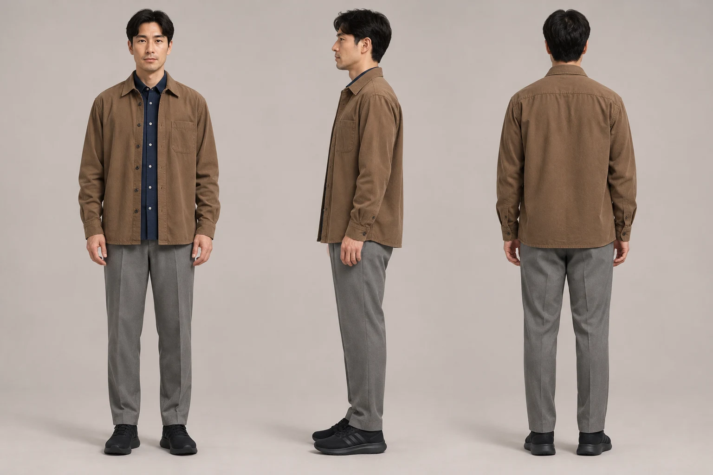

Navy after hours.
One consistent human model, natural proportions and clothing worn together. Select an angle to inspect the silhouette and fabric.

One consistent human model, natural proportions and clothing worn together. Select an angle to inspect the silhouette and fabric.
